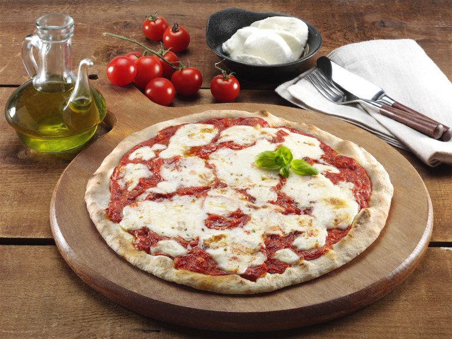

PIZZA REGINA MARGHERITA (KHAWLA)

Pizza always makes a bad day feel better, and there’s nothing nicer than a perfect slice of margherita pizza. Now you can make this recipe at home any time the craving strikes!
This pizza is simple, fresh and a guaranteed crowd pleaser. It’s a delight to make and even better to eat. How about pizza tonight?
INGREDIENTS
-
7 ounces pizza dough
-
1/2 cup canned tomatoes ( recommended: San Marzano), hand crushed
-
2 ounces buffalo milk mozzarella, sliced
-
Extra-virgin olive oil, to serve
-
3 to 4 fresh basil leaves, for garnish
STEPS
-
In a large bowl pour water(20 degrees) and scioglieteci yeast, sugar and oil. Add the flour and started to mix the ingredients. Add the salt and work the dough vigorously for 10 minutes until they turn out to be soft and elastic.
-
Turn onto a floured surface; knead until smooth and elastic, about 6-8 minutes. Place in a greased bowl, turning once to grease the top. Cover and let rise in a warm place until doubled, about 1 hour.
-
Punch dough down; divide in half. Roll each portion into a 13-in. circle. Transfer to 2 greased 14-in. pizza pans; build up edges slightly. Cover with a clean kitchen towel; let rest for 10 minutes.
-
Spoon tomatoes over dough. Top with cheese, oregano, basil, pepper flakes, salt and pepper. Drizzle with oil. Bake at 450° for 15-20 minutes or until crust is golden brown.
Advice: The success of the pizza at home is very dependent on cooking in the oven. And warm it very well before baking pizzas and never open the oven door to check for doneness.